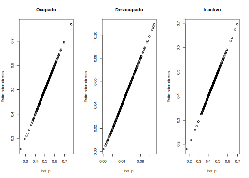

3.10 Validación de los calculos
hat_p <- Y_hat/rowSums(Y_hat)
plot(hat_p[,1],indicador_dam1$Ocupado)
plot(hat_p[,2],indicador_dam1$Desocupado)
plot(hat_p[,3],indicador_dam1$Inactivo)
3.10.1 Correlación de las covariables y las estimaciones directas
cor(hat_p,X_obs)## luces_nocturnas cubrimiento_cultivo cubrimiento_urbano modificacion_humana
## [1,] 0.4920297 -0.1208481 0.4484507 0.2943970
## [2,] 0.1401609 -0.1096543 0.1097744 0.1228389
## [3,] -0.5400578 0.1549760 -0.4868899 -0.3347038
## accesibilidad_hospitales accesibilidad_hosp_caminado
## [1,] 0.11274982 0.09231100
## [2,] -0.07645658 -0.09435139
## [3,] -0.09152536 -0.06550775Agregando el intercepto a la matrix de covariables
X1_obs <- cbind(matrix(1,nrow = D,ncol = 1),X_obs)
K = ncol(X1_obs)
D1 <- nrow(X_pred)
X1_pred <- cbind(matrix(1,nrow = D1,ncol = 1),X_pred)3.10.2 Preparando argumentos para STAN
sample_data <- list(D = D,
P = P,
K = K,
hat_y = Y_hat,
X_obs = X1_obs,
X_pred = X1_pred,
D1 = D1)3.10.3 Preparando el modelo en STAN
fit2 <-
cmdstan_model(stan_file = "01 Modelo de area/0funciones/01 Multinomial_simple_pred.stan",
compile = TRUE)3.10.4 Ejecutando el modelo en STAN
fit_mcmc2 <- fit2$sample(
iter_sampling = 1000,
iter_warmup = 1000,
data = sample_data,
seed = 123,
chains = 4,
parallel_chains = 4
)Guardando el modelo
fit_mcmc2$save_object(
file = "01 Modelo de area/CHL/2017/Data/fit_multinomial_con_covariable.Rds")leer el modelo previamente ejecutado
fit_mcmc2 <- readRDS("01 Modelo de area/CHL/2017/Data/fit_multinomial_con_covariable.Rds")3.10.5 Valores estimados para beta
fit_mcmc2$summary("beta") %>% as.data.frame() %>% tba()| variable | mean | median | sd | mad | q5 | q95 | rhat | ess_bulk | ess_tail |
|---|---|---|---|---|---|---|---|---|---|
| beta[1,1] | -2.4861 | -2.4855 | 0.0428 | 0.0437 | -2.5573 | -2.4174 | 1.0023 | 1019.1951 | 2598.776 |
| beta[2,1] | -0.1591 | -0.1595 | 0.0184 | 0.0183 | -0.1895 | -0.1280 | 1.0050 | 1324.1582 | 2640.008 |
| beta[1,2] | -0.0966 | -0.0963 | 0.0899 | 0.0895 | -0.2459 | 0.0518 | 1.0059 | 860.8015 | 1992.299 |
| beta[2,2] | -0.2346 | -0.2350 | 0.0391 | 0.0391 | -0.2990 | -0.1709 | 1.0083 | 1097.2804 | 1956.711 |
| beta[1,3] | -0.2137 | -0.2141 | 0.0509 | 0.0503 | -0.2981 | -0.1295 | 1.0044 | 816.9598 | 1888.151 |
| beta[2,3] | -0.0429 | -0.0430 | 0.0220 | 0.0221 | -0.0793 | -0.0066 | 1.0053 | 977.6790 | 1723.405 |
| beta[1,4] | -0.1609 | -0.1603 | 0.0748 | 0.0737 | -0.2829 | -0.0378 | 1.0053 | 1114.3069 | 2116.905 |
| beta[2,4] | 0.0145 | 0.0148 | 0.0324 | 0.0318 | -0.0401 | 0.0681 | 1.0051 | 1052.9843 | 2159.417 |
| beta[1,5] | 0.2879 | 0.2883 | 0.0975 | 0.0977 | 0.1281 | 0.4457 | 1.0085 | 744.0500 | 1651.688 |
| beta[2,5] | 0.0627 | 0.0629 | 0.0423 | 0.0420 | -0.0087 | 0.1331 | 1.0059 | 886.6170 | 1545.972 |
| beta[1,6] | 0.0298 | 0.0256 | 0.1727 | 0.1726 | -0.2482 | 0.3195 | 1.0024 | 959.8096 | 1645.669 |
| beta[2,6] | -0.1213 | -0.1216 | 0.0741 | 0.0748 | -0.2412 | 0.0014 | 1.0035 | 1076.9747 | 1916.019 |
| beta[1,7] | -0.3286 | -0.3231 | 0.6318 | 0.6351 | -1.3925 | 0.7048 | 1.0031 | 1066.6718 | 1780.399 |
| beta[2,7] | -0.1183 | -0.1166 | 0.2715 | 0.2703 | -0.5650 | 0.3219 | 1.0032 | 1151.2476 | 2512.283 |
3.10.6 Valores estimados para la matriz de correlación
fit_mcmc2$summary("Omega")%>% as.data.frame() %>% tba()| variable | mean | median | sd | mad | q5 | q95 | rhat | ess_bulk | ess_tail |
|---|---|---|---|---|---|---|---|---|---|
| Omega[1,1] | 1.0000 | 1.0000 | 0.0000 | 0.0000 | 1.0000 | 1.0000 | NA | NA | NA |
| Omega[2,1] | 0.3437 | 0.3474 | 0.0648 | 0.0636 | 0.2327 | 0.4449 | 1.0064 | 732.5882 | 1447.365 |
| Omega[1,2] | 0.3437 | 0.3474 | 0.0648 | 0.0636 | 0.2327 | 0.4449 | 1.0064 | 732.5882 | 1447.365 |
| Omega[2,2] | 1.0000 | 1.0000 | 0.0000 | 0.0000 | 1.0000 | 1.0000 | NA | NA | NA |
3.10.7 Validación dela convergencia de las cadenas
valores cercanos a 1 indica que las cadenas hicieron convergencia.
a <- fit_mcmc2$summary()
mcmc_rhat(a$rhat)
a %>% filter(rhat>1.05,
!grepl(pattern = "theta_pred",x =variable)
) %>% arrange(desc(rhat)) %>%
tba()| variable | mean | median | sd | mad | q5 | q95 | rhat | ess_bulk | ess_tail |
|---|---|---|---|---|---|---|---|---|---|
3.10.8 Evaluación visual de las cadenas para beta
(mcmc_dens_chains(fit_mcmc2$draws("beta")) +
mcmc_areas(fit_mcmc2$draws("beta")))/
mcmc_trace(fit_mcmc2$draws("beta"))
3.10.9 extrayendo las estimaciones para theta
theta_temp <- fit_mcmc2$summary("theta")
theta_temp_pred <- fit_mcmc2$summary("theta_pred")3.10.10 Organizando los resultados en una matriz.
theta_fh <- matrix(theta_temp$mean, nrow = D,ncol = P,byrow = FALSE)
rowSums(theta_fh)## [1] 1 1 1 1 1 1 1 1 1 1 1 1 1 1 1 1 1 1 1 1 1 1 1 1 1 1 1 1 1 1 1 1 1 1 1 1 1
## [38] 1 1 1 1 1 1 1 1 1 1 1 1 1 1 1 1 1 1 1 1 1 1 1 1 1 1 1 1 1 1 1 1 1 1 1 1 1
## [75] 1 1 1 1 1 1 1 1 1 1 1 1 1 1 1 1 1 1 1 1 1 1 1 1 1 1 1 1 1 1 1 1 1 1 1 1 1
## [112] 1 1 1 1 1 1 1 1 1 1 1 1 1 1 1 1 1 1 1 1 1 1 1 1 1 1 1 1 1 1 1 1 1 1 1 1 1
## [149] 1 1 1 1 1 1 1 1 1 1 1 1 1 1 1 1 1 1 1 1 1 1 1 1 1 1 1 1 1 1 1 1 1 1 1 1 1
## [186] 1 1 1 1 1 1 1 1 1 1 1 1 1 1 1 1 1 1 1 1 1 1 1 1 1 1 1 1 1 1 1 1 1 1 1 1 1
## [223] 1 1 1 1 1 1 1 1 1 1 1 1 1 1 1 1 1 1 1 1 1 1 1 1 1 1 1 1 1 1 1 1 1 1 1 1 1
## [260] 1 1 1 1 1 1 1 1 1 1 1 1 1 1 1 1 1 1 1 1 1 1 1 1 1 1 1 1 1 1 1 1 1 1 1 1 1
## [297] 1 1 1 1 1 1 1 1 1 1 1 1 1theta_fh_pred <- matrix(theta_temp_pred$mean, nrow = D1,ncol = P,byrow = FALSE)
rowSums(theta_fh_pred)## [1] 1 1 1 1 1 1 1 1 1 1 1 1 1 1 1 1 1 1 1 1 1 1 1 1 1 1 1 1 1 1 1 1 1 1 1 1 13.10.10.1 Resultados informativos sobre el comportamiento del modelo.
mean(indicador_dam1$Ocupado)## [1] 0.5086088mean(theta_fh[,1])## [1] 0.5092394mean(indicador_dam1$Desocupado)## [1] 0.0473751mean(theta_fh[,2])## [1] 0.04688798mean(indicador_dam1$Inactivo)## [1] 0.4440161mean(theta_fh[,3])## [1] 0.44387263.10.11 Preparando el gráfico comparativo entre la estimación dir y el modelo
par(mfrow = c(1,3))
plot(theta_fh[,1],indicador_dam1$Ocupado)
abline(a = 0,b = 1, col = "red")
plot(theta_fh[,2],indicador_dam1$Desocupado)
abline(a = 0,b = 1, col = "red")
plot(theta_fh[,3],indicador_dam1$Inactivo)
abline(a = 0,b = 1, col = "red")
3.10.12 Preparando el ppc
y_pred_B <- fit_mcmc2$draws(variables = "theta", format = "matrix")
rowsrandom <- sample(nrow(y_pred_B), 500)
theta_1<- grep(pattern = "1]",x = colnames(y_pred_B),value = TRUE)
theta_2<- grep(pattern = "2]",x = colnames(y_pred_B),value = TRUE)
theta_3<- grep(pattern = "3]",x = colnames(y_pred_B),value = TRUE)
y_pred1 <- y_pred_B[rowsrandom,theta_1 ]
y_pred2 <- y_pred_B[rowsrandom,theta_2 ]
y_pred3 <- y_pred_B[rowsrandom,theta_3 ]
ppc_dens_overlay(y = as.numeric(indicador_dam1$Ocupado), y_pred1)/
ppc_dens_overlay(y = as.numeric(indicador_dam1$Desocupado), y_pred2)/
ppc_dens_overlay(y = as.numeric(indicador_dam1$Inactivo), y_pred3)
knitr::opts_chunk$set(warning = FALSE,
message = FALSE,
cache = TRUE)
library(kableExtra)## Warning: package 'kableExtra' was built under R version 4.2.2tba <- function(dat, cap = NA){
kable(dat,
format = "html", digits = 4,
caption = cap) %>%
kable_styling(bootstrap_options = "striped", full_width = F)%>%
kable_classic(full_width = F, html_font = "Arial Narrow")
}